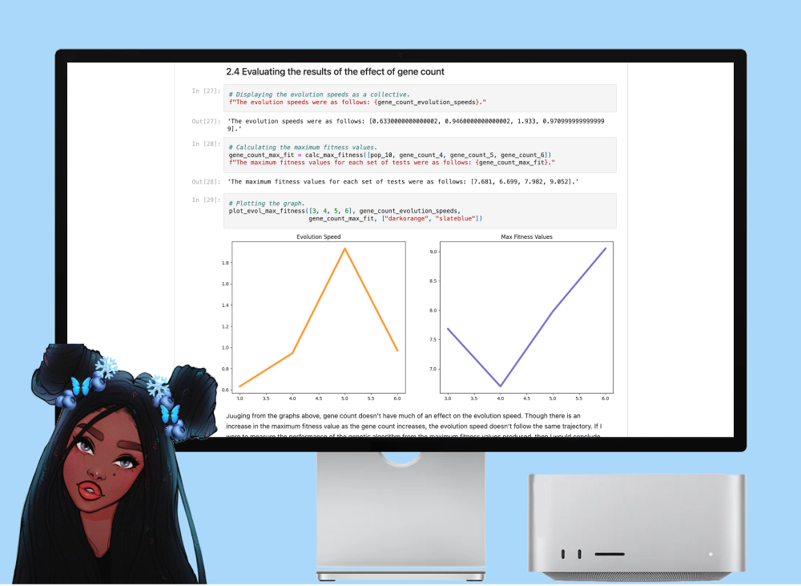

Machine Learning.

Exploring Game playing AIs
In this project, I explored the fascinating domain of game-playing artificial intelligences (AIs). Delving into the research papers, I dissected the methodologies and innovations aimed at pushing the boundaries of AI in gaming. From surpassing human-level performance in complex fighting games to emulating human play in mobile card games, each paper showcased unique approaches and advancements. Additionally, ethical considerations were examined, highlighting the importance of fairness and player enjoyment. Through meticulous analysis and critical evaluation, I gained insights into the evolving landscape of AI in gaming and its broader implications.
I accomplished the following:
- Explored the domain of game-playing AIs through in-depth analysis of research papers.
- Investigated methodologies aimed at surpassing human-level performance in complex fighting games.
- Examined innovative approaches to emulate human play in leading mobile card games.
- Analysed ethical considerations in game-playing AI research, emphasising fairness and player enjoyment.
- Gained insights into the evolving landscape of AI in gaming and its broader implications for technology and society.
- Demonstrated critical thinking and analytical skills through meticulous evaluation of research methodologies and outcomes.
- Showcased ability to synthesize complex information and communicate findings effectively.

Genetic Algorithms
This project focuses on investigating the impact of various parameters on the evolution of creatures within a simulation environment. Through meticulous experimentation and analysis, I explored the effects of mutation rates, simulation run length, and encoding scheme on evolution speed, fitness values, and creature morphology. By adjusting these parameters and observing the resulting changes, I gained valuable insights into the dynamics of evolutionary processes and the factors that influence them. This project represents a comprehensive exploration of evolutionary dynamics in a simulated setting, providing valuable insights into the complex interplay between genetic variation, environmental factors, and evolutionary outcomes.
I accomplished the following:
- Investigated the effects of mutation rates on evolution speed and fitness values in a simulation environment.
- Explored the impact of simulation run length on evolution speed and observed non-linear relationships between run length and evolutionary outcomes.
- Analysed the influence of encoding scheme parameters, such as link length, link recurrence, control waveform, and control amp, on the morphology and behavior of evolved creatures.
- Utilised data visualisation techniques, including graphs and figures, to present findings and facilitate interpretation.
- Demonstrated a systematic approach to experimental design, data collection, and analysis in the field of evolutionary simulation.
- Provided valuable insights into the complex dynamics of evolutionary processes and the factors that drive evolutionary outcomes.
- Contributed to the advancement of knowledge in evolutionary biology and artificial life through empirical experimentation and analysis.